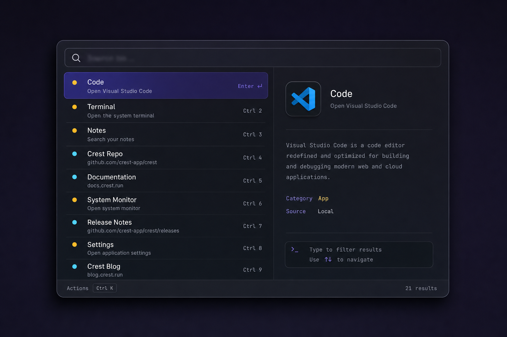

Open source launcher for Linux · MIT · inspect every line on GitHub
A fast, ergonomic, extendable launcher—apps, files, clipboard history, web answers, and manifest‑scoped plugins—all from the keyboard, without a cloud account tied to someone else's codebase.
v0.2.3 · x86_64 · .deb · AppImage · single-instance palette toggle (Wayland‑friendly)

Showing assets/hero-mockup.png · replace it with your own launcher screenshot anytime (same filename updates OG + README).
Fast. Rust‑backed fuzzy search and local SQLite—you stay in milliseconds, not menu trees.
Ergonomic. Arrow keys, Enter, actions menu—launcher flows that feel obvious on day one.
Native. Tauri + system WebView, not Electron—lighter footprint across daily driver sessions.
Transparent. MIT code and manifest‑listed plugins—you choose what executes, openly.
The heavy work runs in Rust: indexing, SQLite, clipboard, plugins, and scraping bridges. The window is Tauri 2 with a small React UI—similar footprint to native tooling, unlike shipping a full browser runtime with every build.
Tauri invokes Rust commands from the webview; no localhost HTTP server in the hot path.
App metadata, clipboard history, and file index snapshots stay in local databases—not a vendor cloud.
Install from GitHub (paths match current release).
Copies land in local SQLite—you can recall snippets and URLs without syncing to a vendor. Search is keyed to your keyboard flow, not upload queues.
Network use is deliberate (e.g. web answers when you pause typing). There is no sign-in sheet and no product analytics channel.
Wikipedia-style snippets and a “search the web” row when nothing local matches—with an explicit pause before outbound requests.
Ship commands as small executables or scripts that print structured JSON. Default policy reads manifest.json so arbitrary files in ~/.config/crest/plugins are never auto-loaded.
Pick .deb or AppImage from Releases—pinned versions are linked below.
sudo apt install ./crest_*.deb or mark the AppImage executable and run it.
Wayland users: bind a desktop key to run crest (single-instance toggle since v0.2.1). X11 often accepts in-app Super+Space. Details: docs.
Better ergonomics where Wayland restricts global grabs (portals where viable, sharper docs).
Templates, versioning, and a discoverable manifest story so first-party/community tools are easy to vet.
Broader packaging (community AUR / Flatpak interest) tracked with issues—no walled store.